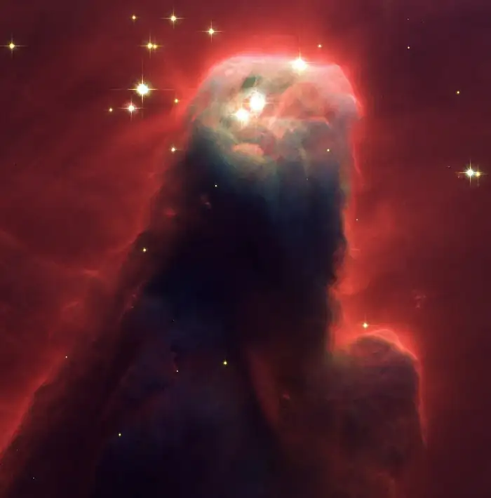
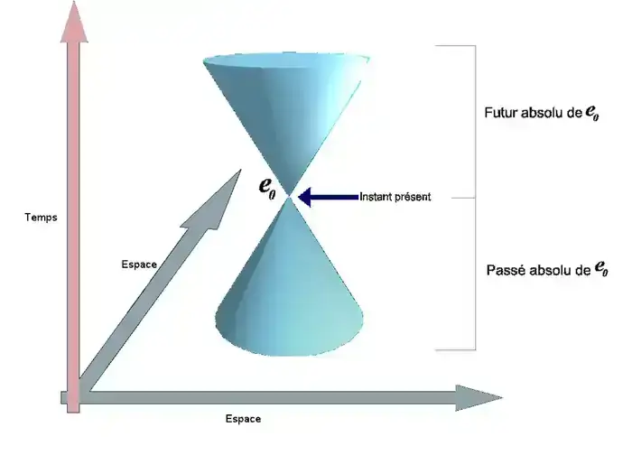
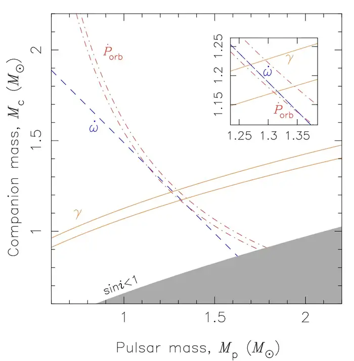

The positions
The block universe treats past, present and future as equally real, with time as a dimension. The growing block has a real present and an accumulating past. Presentism holds that only now exists, which is hard to reconcile with relativity's relativity of simultaneity.
Maps, diagrams and images






The status
Relativity rules out a universal present, which favours the block picture, but quantum mechanics and thermodynamics complicate it. The question is metaphysical: no experiment distinguishes the views.
Documented: the positions.
Favoured: the block, by relativity.
Complicated: by quantum mechanics.
Not empirical: as a question.
The honest label: live debate.
Why it is in the archive
Because it is the deepest question that physics can inform but not answer.
Open resources on this topic
- PapersOpen-access articles: DOAJ · PubMed Central · Internet Archive Scholar
- BooksPublic-domain and borrowable copies: Open Library · Project Gutenberg · Google Books · Internet Archive
Cite this page
Momin, S. (2026). Block Universe or Growing Block. The Larger World Archive. https://drsamonline.github.io/LARGE_GLOBE/block-universe.htmlMomin, Sohil. “Block Universe or Growing Block.” The Larger World Archive, 2026, https://drsamonline.github.io/LARGE_GLOBE/block-universe.html.Momin, Sohil. “Block Universe or Growing Block.” The Larger World Archive, 2026. https://drsamonline.github.io/LARGE_GLOBE/block-universe.html.@misc{block2026block,
author = {Momin, Sohil},
title = {Block Universe or Growing Block},
year = {2026},
howpublished = {The Larger World Archive},
url = {https://drsamonline.github.io/LARGE_GLOBE/block-universe.html},
note = {Last reviewed 20 November 2026}
}Last reviewed 20 November 2026 · Corrections policy · this page is not peer reviewed
Sources for this page
- Wikipedia, “Eternalism (philosophy of time)” — the blocken.wikipedia.org
- Wikipedia, “Presentism (philosophy of time)” — the alternativeen.wikipedia.org
- Wikipedia, “Philosophy of space and time” — the fielden.wikipedia.org
- Wikipedia, “Relativity of simultaneity” — the constrainten.wikipedia.org